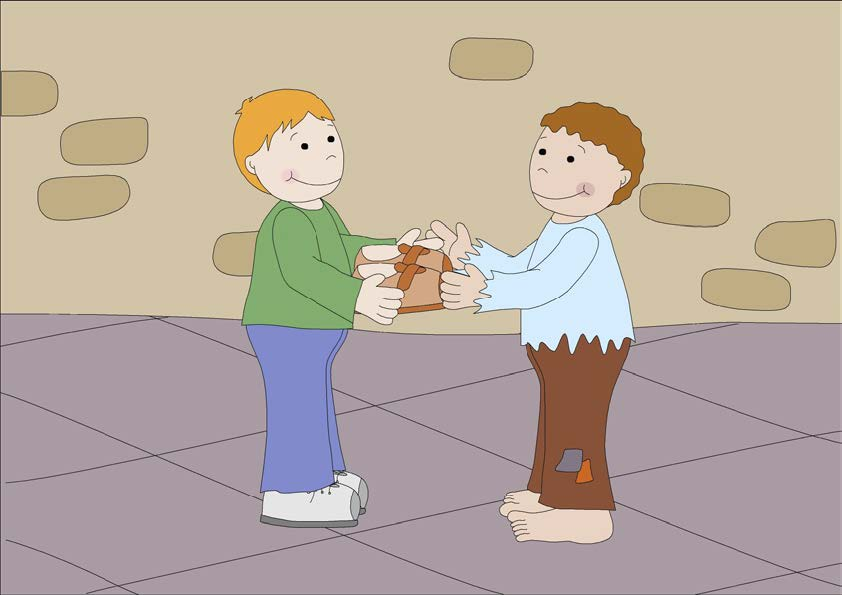
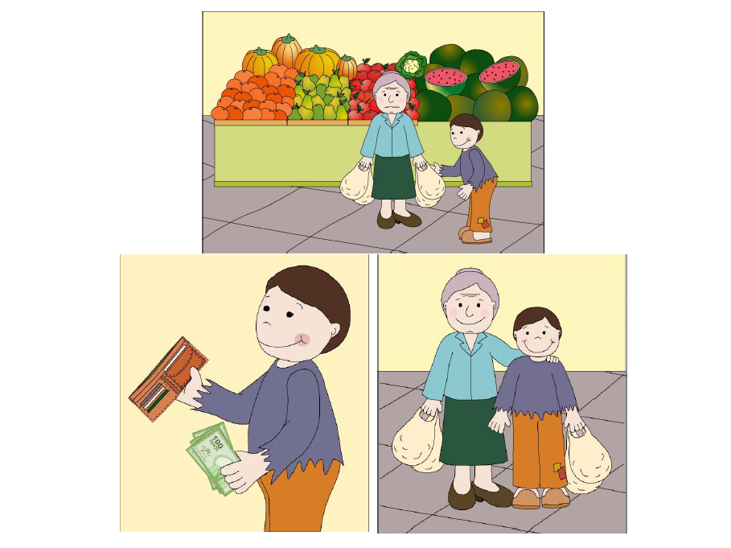

Soy una persona que valora y practica diversas virtudes en mi vida diaria. Una de mis virtudes destacadas es la generosidad. Siempre trato de estar ahí para los demás, dispuesto a ayudar en lo que pueda. Me llena de alegría brindar apoyo, ya sea ofreciendo mi tiempo, escuchando a alguien que necesita desahogarse o compartiendo mis recursos para contribuir al bienestar de los demás.

La honestidad también es una virtud fundamental en mi vida. Considero que la transparencia y la integridad son esenciales en todas mis interacciones. Siempre me esfuerzo por ser honesto en mis palabras y acciones, buscando construir relaciones basadas en la confianza y el respeto mutuo.

Otra virtud que cultivé a lo largo de los años es la paciencia. He aprendido a mantener la calma en situaciones desafiantes, permitiéndome reflexionar y responder de manera más efectiva. La paciencia me ayuda a entender las perspectivas de los demás, a escuchar con empatía y a encontrar soluciones más equilibradas y constructivas.
La perseverancia es otra virtud que considero parte de mi naturaleza. Me comprometo a seguir adelante, incluso cuando enfrento obstáculos o contratiempos. No me rindo fácilmente y mantengo una actitud positiva y enfocada en mis metas. Esta virtud me ha permitido superar desafíos personales y profesionales, y lograr resultados significativos en mi vida.
Además, me considero una persona respetuosa. Valoro la diversidad y trato a todas las personas con cortesía y consideración, independientemente de su origen, creencias o posición. Creo firmemente en la importancia de construir una sociedad inclusiva y respetuosa, y siempre trato de fomentar ese valor en mis interacciones cotidianas.
En resumen, mi combinación de virtudes incluye la generosidad, la honestidad, la paciencia, la perseverancia y el respeto. Estas cualidades me definen como individuo y guían mis acciones y decisiones en la vida. Siempre busco cultivar y fortalecer estas virtudes para convertirme en una mejor persona y contribuir positivamente a mi entorno.